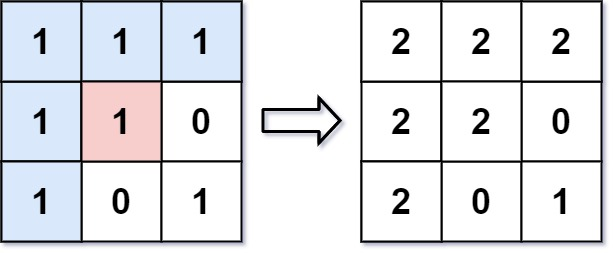

733. 图像渲染
BFS 洪水填充：从起点出发，只向「还是旧颜色」的四邻扩散，入队前先染色防重复；起点新旧同色时直接原样返回。
思路
- 起点颜色等于目标颜色时必须直接返回，否则会把新颜色当旧色无限扩散。
- BFS：出队一个像素，四邻里仍是旧颜色的「先染色再入队」，保证每个像素至多进队一次。
- 连通才扩散：斜对角、被异色隔开的像素都不动。
图解
最优解
1import java.util.*;2 3class Solution {4 public int[][] floodFill(int[][] image, int sr, int sc, int color) {5 int old = image[sr][sc];6 // 起点已经是目标色：再染会把新颜色当「旧色」扩散，直接返回7 if (old == color) return image;8 image[sr][sc] = color;9 Queue<int[]> q = new ArrayDeque<>();10 q.add(new int[]{sr, sc});11 int[][] dirs = {{-1, 0}, {1, 0}, {0, -1}, {0, 1}};12 while (!q.isEmpty()) {13 int[] p = q.poll();14 for (int[] d : dirs) {15 int r = p[0] + d[0], c = p[1] + d[1];16 // 只扩散「还是旧颜色」的连通像素17 if (r < 0 || r >= image.length || c < 0 || c >= image[0].length || image[r][c] != old) continue;18 image[r][c] = color; // 入队前就染色，保证每个像素至多入队一次19 q.add(new int[]{r, c});20 }21 }22 return image;23 }24}题目
有一幅以 m x n 的二维整数数组表示的图画 image ，其中 image[i][j] 表示该图画的像素值大小。你也被给予三个整数 sr , sc 和 color 。你应该从像素 image[sr][sc] 开始对图像进行上色 填充 。
为了完成 上色工作：
- 从初始像素开始，将其颜色改为
color。 - 对初始坐标的 上下左右四个方向上 相邻且与初始像素的原始颜色同色的像素点执行相同操作。
- 通过检查与初始像素的原始颜色相同的相邻像素并修改其颜色来继续 重复 此过程。
- 当 没有 其它原始颜色的相邻像素时 停止 操作。
最后返回经过上色渲染 修改 后的图像 。
示例 1:

输入：image = [[1,1,1],[1,1,0],[1,0,1]]，sr = 1, sc = 1, color = 2
输出：[[2,2,2],[2,2,0],[2,0,1]]
解释：在图像的正中间，坐标
(sr,sc)=(1,1) （即红色像素）,在路径上所有符合条件的像素点的颜色都被更改成相同的新颜色（即蓝色像素）。注意，右下角的像素 没有 更改为2，因为它不是在上下左右四个方向上与初始点相连的像素点。
示例 2:
输入：image = [[0,0,0],[0,0,0]], sr = 0, sc = 0, color = 0
输出：[[0,0,0],[0,0,0]]
解释：初始像素已经用 0 着色，这与目标颜色相同。因此，不会对图像进行任何更改。
提示:
m == image.lengthn == image[i].length1 <= m, n <= 500 <= image[i][j], color < 2160 <= sr < m0 <= sc < n
题面取自力扣当前版本。
数据快照 2026-11-04。题面版权归力扣所有，本站点仅供本人学习使用，请勿对外发布。